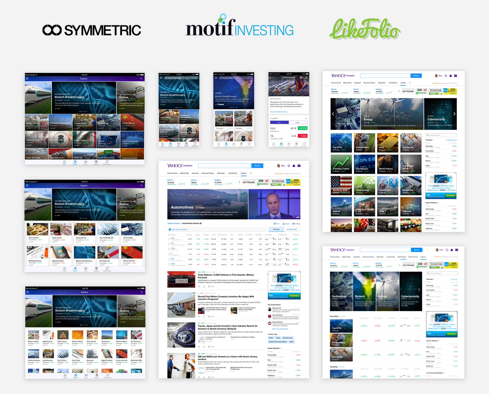

We needed to provide a way for users type 1 and 2 to discover new companies because they make up over 70% of our userbase.
Thinking of different ways for users to access more information about companies they don't know and what they might do with that data.


We partnered with many companies to provide curated industry-based lists and we explored in different card format grids for easy visual scanning.
Going through each unique use case and user flow.

Problem: The full bleed grid system ended up being too difficult for users to parse.
Solution: We did a non-full bleed card grid and made the carousel rotate every 4 secs to help users focus their eyes.
Problem: Users had a hard time navigating and finding lists they were interested in.
Solution: We organized them by popularity, sectors, and industries.
Feature Request: Users wanted to be able to add stocks to their own lists
Solution: We gave them ability to add stocks to existing or new list.
Feature Request: Users wanted to be able to compare the watchlist to market performance.
Solution: We implemented mini chart and full screen charts.
Feature Request: Users wanted more information on which stocks change daily.
Solution: We added a history/timeline view of every stock update.